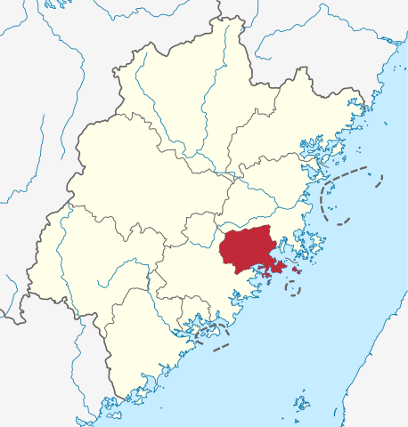

历史
莆田历史上曾是人文荟萃之地。西晋末年，中原战乱，中原先进的生产技 术和文化随着衣冠南渡，大批南下的汉人进入闽地，莆田亦是闽中一县， 亦也算在八姓入闽之中[1]。到了南朝陈光大二年（568年），莆田始立 县。唐武则天圣历二年（699年），析莆田县西部设立清源县（后改名 仙游县），莆仙两县均属当时的清源郡（郡治在今泉州）。宋太平兴国四年 （979年），又析莆田、仙游等部分区域设立兴化县，置太平军（旋改兴化军 ），太平兴国八年（983），兴化军军治由游洋迁到莆田，辖莆田、仙游、兴化三 个县。莆田逐步成为闽中的政治、经济、文化中心。宋景炎二年（1277），兴化 军升为兴安州。元代改称兴化路、兴化分省。明代改为兴化府，裁撤兴化县，辖地 分别归并莆仙两县。清代仍为兴化府。民国时期，废府，隶属南路道、厦门道、福 建省、兴泉省和福建第四行政督察区。中华人民共和国成立后，莆仙两县历属福 建第五行政督察区、晋江专区、闽侯专区、莆田地区。 1983年4月28日，国务院批准撤销莆田地区，将闽清、永泰、福清、长乐、平潭5县 划归福州市，将莆田、仙游2县划归晋江地区。1983年9月9日，国务院批准设立地级 莆田市，以莆田县部分行政区域为该市行政区域，将晋江地区的莆田、仙游二县划归莆 田市管辖。析莆田县地置城厢、涵江2区。将莆田县的城厢镇、城郊公社成立城厢区 ，将莆田县的涵江镇、涵江公社成立涵江区。2003年2月1日，经国务院批准，进行部 分行政区划调整，将原莆田县的部分乡镇分别划入城厢区、涵江区，并新设立荔城区、 秀屿区。莆田市现辖有城厢、荔城、涵江、秀屿四区和仙游县。
地理
莆田市地处福建沿海中部，东临台湾海峡与台湾隔海相望，北依省会福州市，南接泉州并与厦门相近，位于东经118°27`－119°39`，北纬24°59`－25°46`，陆域面积约4,200平方千米。地势西北高东南低，背山面海，西北部山峦叠嶂，中部丘陵起伏，东南部广阔的兴化平原与逶迤的木兰溪、延寿溪、秋芦溪构成了江南水乡。 莆田境内海岸线长达343.6千米，约占福建省海岸线总长的10.3%，拥有湄洲湾、兴化湾 、平海湾，其中湄洲湾的秀屿、东吴水深港阔、不冻不淤，被誉为“世界不多，中国少有” 的天然良港。
特色美食
.jpg)
卤面早期是闽南人神诞时作为供馔供奉神明的一道面食。后来社会经济好转，
开始在婚礼或其他喜庆中开始食用。在马来西亚的卤面随着煮面方式的不同而
分为两派，在以槟城为主的北马地区及新加坡，当地的卤面是依循漳州及福州
卤面的做法，先将黄面烫熟之后，在淋上预先做好的卤汤，其中卤汤是以虾汤
为底，加入了黑酱油、五香粉等，使得汤汁呈现深褐色，搭配的配料以卤肉片
、排骨、卤蛋、香菇、鸡脚等为主，吃的时候会拌入参巴辣椒酱及乌醋，一般
贩售福建面（虾面）的店家都会同时贩卖这道面食。
在以吉隆坡为主的中马地区，当地的卤面的煮法与泉州及兴化地区的类似，即面条与汤
汁同煮，最后才加入地瓜粉勾芡且打入蛋花。当地的卤面又因为汤汁颜色的深浅可分为
黑白两派。在雪兰莪州的乌鲁音（Ulu Yam）当地的卤面在烹煮的过程中，会在卤汁中
加入酱油及乌醋，据说是上世纪20年代，在当地有人在新加坡吃了当地的漳州式卤面后
，念念不忘，便依样画葫芦，自创了加入黑酱油及乌醋版本的卤面，有别于吉隆坡与雪
兰莪一带的白色卤面，深受当地人欢迎，因此在乌鲁音许多店家也开始推出这道面食，
成为当地的代表性美食。在中马其他地区的卤面则出现在华人的大排档内，将蒜末及比
目鱼粉爆香后，加入高汤、面条、蔬菜、猪肉片、海鲜等，加盖将面条焖至熟透，最后
勾芡及打入蛋花，加上猪油渣，以浅色的汤汁与食客相见，吃时才依个人的口味，自行
加入乌醋调味。
台湾的卤面又称大卤面，是随着闽地开台者传入。因为南方较少面食的缘故，所以多半
只在喜庆时才会食用；台湾各地区随着时间演进也渐渐创造出自己的风格，如鹿港的锦
卤面、台南的打卤面等，在日本治台时期皆已有许多商家专营卤面生意。打卤的打字主
要表示勾芡的动作，也有一说制作卤面时需要张罗人手，因此要“打算”而用打字。此类
卤面多半微甜，食用前淋上乌醋提出香气，多半放入黄色油面或米粉。1949后随国民政
府播迁至台的北方人将打卤面带至台湾，造成有两种名称类似的面食容易混淆。